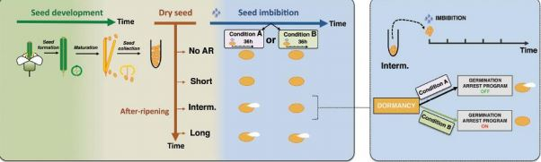
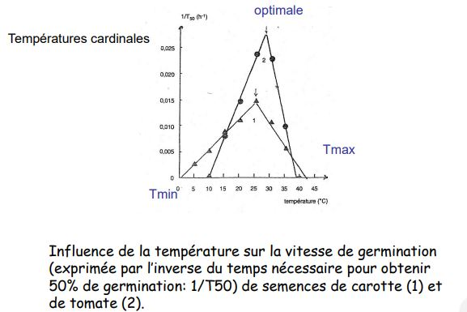
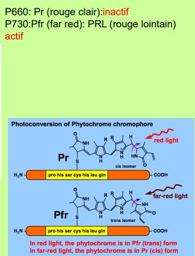
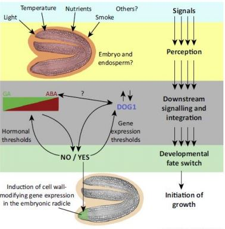
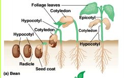
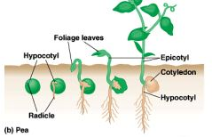

Chapitre 4 : La germination des graines
Graine en dormance : mécanisme d'adaptation survie en attendant des conditions favorables. Il existe deux types de dormances : embryonnaires et d'origine tégumentaires.
I) La dormance des graines
A) Dormances embryonnaires
Si on isole l'embryon et qu'on le met dans les meilleurs conditions possibles, la graine ne germinera pas. Pour lever la dormance, il faudra que la graine soit exposée à des conditions de froids humides -> stratification. Elle va faire évoluer la teneur hormonale au niveau de l'embryon.

Lorsque les graines sont en cours de maturation, plusieurs phytohormones vont être impliquées durant cette phase de maturation et vont former un complexe. Tout au départ de la formation des graines, des gènes impliqués dans la biosynthèse de l'acide abscissique (NCED) qui vont être formtement exprimés. Cela va se traduire par une accumulation d'acide abscissique au départ de la phase de dormance. D'autres gènes, vont également être activés et vont permettre le maintien d'un taux élevé d'acide abscissique pendant la phase de dormance. L'activation des gènes va inhiber la formation des gibbérélines. On a également un pique d'auxine. Lors de la levé de la dormance, l'étape de stratification va venir régulé positivement les gènes impliqués dans la synthèse des gibbérélines. Puis va s'inverser pour mettre en valeur les gibbérélines. La teneur en gibbéréline va augmenter. L'éthylène va aussi venir réguler de façon positive la biosynthèse des gibbérélines. Ces transports d'hormones vont se faire grâce à des transporteurs de gibbérélines, d'acide abscissique et vont avoir des flux de tégument de l'albumen jusqu'à ces téguments.
Les strigolatones, une phytohormone particulière. Molécules qui ont été identifiés comme déclenchant la germination de plantes parasites tels que les striga ou les orobanches. Le stiga est une plante parasite qui va des dégats dans les céréales. Les orobanches chez les culture de plantes dicotylédones. Elles sont capable de produire de toutes petites graines sans réserves. Dès qu'elle germe, il faut qu'elle envahisse une plante hôte. Nombre de réserve très limiter. Elle ne va germer qu'en réponse à un signal,molécule dans rhizosphère produite par la plante hôte. Il a identifier que ces molécules appartiennent au strigolatum. Elles ont été identifier dans des zones de strongulation. Ces strigolatum sont aujourd'hui des phytohormones à part entière. Elles jouent un rôle également dans la levée de la dormance des graines et dans la ramification dans le méristème racinaire.

B) Les inhibitions d'origine tégumentaire
La dormance est localisée au niveau des téguments. Ces téguments peuvent perdre l'imperméabilité à l'eau. Elles resteront dures (ex. légumineuses). Chez d'autres graines (laitue), entrée d'eau dans la graine mais pas d'oxygène. Peut s'expliquer de plusieurs façons, téguments épais. Chez les céréales, présence de composés phénoliques présent au niveau des téguments vont fixés l'oxygène et former des polymères de quinones. Dans certains ça sera une résistance mécanique, l'embryon va recevoir assez d'eau et d'oxygène mais les téguments sont trop épais.
Dans ce cas, la levée de dormance va fragilisé les téguments. Dégradation des téguments lors de période de sécheresse. La température peut fragiliser les téguments, la pluie, incendies, micro - organismes, éliminations artificielles.
Les orchidées naturellement présentent un très faible taux de germination. L'embryon ne va pas avoir de réserves nutritives suffisantespour pouvoir germer et dvp une plante entière. La plante va compenser une quatité impressionnante de lui même. En 1844, un botaniste (Neumann) a observé que pour germer, les graines d'orchidées devaient être à proximité de la plante mère. En 1899, (Bernard), graines en cours de germination étaient systématiquement associé à des champignons mycorhiziens. Le champignon agit sur l'embryon en favorisant son alimentation (sucres, enzymes, vitamines). Afin de faire des cultures d'orchidées -> semis non symbiotiques qui vont mimer l'effet des mycorhizes grâce à un milieu de culture. Les gibbérélines vont permettre le dvp de la tige.
II) Facteurs externes influençant la germination
L'eau : élément indispensable pour déclencher la germination -> imbibition de la semence est un préalable à toute reprise du métabolisme.

Phase 1 : imbibition, gonflement de la graine, augmentation intensité respiratoire
Phase 2 : plateau ou phase de germination, perte de la tolérance à la dessication
Phase 3 : Croissance de la radicule, absorption importante d'eau
Ces propriétés sont utilisés chez les céréales où on a de la pré -germination de graine -> les graines vont se rehydrater, début de germination puis on va déshydrater les graines et les stocker.
L'oxygène : augmentation importante de la quantité respiratoire
La température : agit sur la solubilité de l'oxygène et sur l'action des enzymes impliquées dans l'hydrolyse des réserves. Il faut calculer le T50, temps nécessaire pour obtenir 50% de germination.

La lumière : 3 catégories de semences suivant leur réponse à la lumière
- à photosensibilité positive (70%)
- à photosensibilité négative (25%)
- indifférentes à la lumière, tomates, courges (5%)
Cette photosensibilité fait intervenir des molécules, des phytochromes : pigments ayant un rôle de photorécepteurs et localisées dans l'embryon.
Chromoprotéine : 2 sous - unités
- une grande partie protéique (apoprotéine de 120kDa)
- une partie chromophore gréffé sur la partie protéique : groupement tétrapyrolique ouvert qui absorbe les radiations
Le spectre d'absorption du phytochrome montre qu'il y a deux spectres avec deux maximum d'absorbance, un premier spectre qui va avoir un maximum d'absorbance à 660 nm et un deuxième spectre avec un maximum à 730 nm.

Ce phytochrome peut exister sous deux isoformes. Le P660 ou Pr (rouge clair) est la forme inactive du phytochrome est correspond à l'isomère 6. La deuxième forme de ce phytochrome, le P730 ou Pfr ou PRL (rouge lointain) est la forme active du phytochrome correspondant à l'isomère trans. Les deux formes sont identiques à l'exception d'une liaison. Ils vont basculer de l'un à l'autre en réponse à la lumière, photoconversion.

Des radiations de 660 nm simulent la germination des semence de laitue. Des radiations de 730 nm inhibent la germination des semences de laitue. Effet réversible, ces deux formes sont antagonistes. Le P660 va absorber des rayons lumineux 660 nm, et va basculer en P730. Le P730 absorbe au maximum à 730 et rebascule en 660 nm.

L'assemblage entre le chromophore et la protéine va se faire dans le cytoplasme. Une fois synthétisé, le phytochrome est sous sa forme P660 donc inactive. Dans le cytoplasme, si il est éclairé par une onde de 660 nm il passe en P750 nm et est pris en charge par des transporteurs nucléaires pour être acheminé jusqu'au noyau. Quand on est sous la forme P730, le phytochrome est capable de se fixer à facteurs de transcription pour former des complexes. Ce complexe va venir se fixer sur le promoteur de certains gènes. A leur tour, vont activer d'autres gènes pour activer la germination.
La floraison et la germination va faire intervenir des phytochromes sous forme active ou sous forme passive. Dans la nature, la lumière blanche contient 660nm et 730nm. Or l'énergie est inversement proportionnel à la longueur d'onde. Donc 660 va l'emporter sur le rouge lointain, un équilibre va s'établir. La forme active l'emporte sur la forme inactive.

Sous l'effet de différents facteurs, il y aura une augmentation de l'acide gibbéréline. Sous l'acion de ces hormones, des enzymes vont être activées. Parmis elles, certaines vont dégrader les réserves ou dégrader la paroi cellulaire au niveau de l'albumen ou des téguments pour permettre l'élongation.
III) Le métabolisme des graines lors de la germination
Mobilisation des réserves. Les réserves de liquides accumulées dans les graines vont servir à former des glucides en se transformant et se métabolisant. Au niveau de l'embryon, une production de gibbérélines sera accrue. Les gibbérélines seront transportés jusqu'à la dernière couche de l'albumen, aleurone riche en protéines. Vont être synthétiser et activer des alpha amylases qui vont venir hydrolyser l'amidon de l'albumen pour libérer des glucides qui vont servir de source d'énergie pour la croissance de l'embryon.

A) Germination des dicotylédones
La germination épigée : le haricot. L'hypocotyle va s'allonger et va former une crosse. Sous la lumière, une élongation aux niveaux des cellules va avoir pour effet de tirer les cotylédons en dehors du sol pour protéger le méristème polymère. Les cotylédons vont faner, l'épicotyle va croître.

La gemrination hypogée : le pois. L'hypocotyle ne va pas s'allonger. L'épicotyle va s'accroître est formé une crosse. Sous la lumière, l'épicotyle va se redresser. Les cotylédons resteront sous le sol.

B) Germination des monocotylédones
Lorsque la plante arrive à la surface du sol, le coleoptile va être percé par la croissance de la tige. Lorsque la radicule sort des téguments, on est dans une phase de croissance.